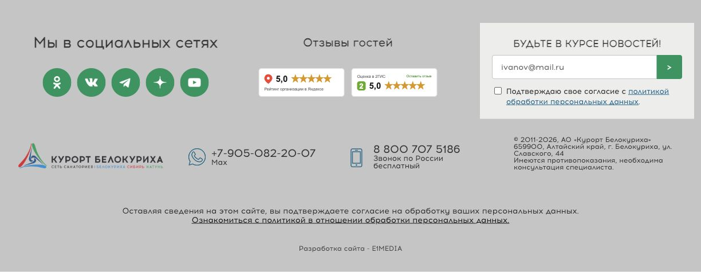

Скачать HTML-блок · Скачать CSS · Скачать сравнение
# Вариант 2. Две группы — соцсети и отзывы Точечная правка существующего футера. Переписывать футер целиком не нужно. Проверено по публичной разметке katun-san.ru от 20.10.2026. Путь к файлу серверного шаблона неизвестен: найдите его по классу page-footer__left. ## Быстрое внедрение: один HTML-блок и один CSS-файл ### 1. Найти и заменить только левую колонку В исходнике шаблона найдите: ```html <div class="page-footer__left"> ``` Это блок с заголовком «Мы в социальных сетях» и списком иконок. Замените его целиком, включая его открывающий и закрывающий div, содержимым файла **01-replace-block.html**. Граница замены — конец этой левой колонки, ПЕРЕД соседним блоком: ```html <div class="page-footer__right"> ``` Не заканчивайте замену на первом закрывающем div: он закрывает вложенный список соцсетей, а не всю левую колонку. Не заменяйте сам page-footer__right и ничего после него. В готовом блоке сохранены все семь исходных социальных ссылок, пути к иконкам, атрибуты и две скрытые соцсети. Если в рабочем шаблоне ссылки генерируются PHP/CMS или уже изменились, сохраните этот исходный список/код и перенесите вокруг него только новые обёртки из 01-replace-block.html. Файл **03-changes.diff** показывает эти изменения; это справочное сравнение блока, а не команда git apply для неизвестного серверного файла. ### 2. Добавить стили Создайте на сайте файл **/css/katun-footer-ratings.css** из **02-footer-ratings.css**. После существующего подключения /css/main.css добавьте: ```html <link rel="stylesheet" href="/css/katun-footer-ratings.css?v=20261020-columns"> ``` Альтернатива: добавьте содержимое CSS в конец существующего файла стилей. Используйте только один способ и только один вариант. Если вчерашние демонстрационные compact.css/ratings.css уже подключены для этой правки, удалите их подключения: новый CSS самодостаточен. Все новые правила ограничены #footer .ktfc. Они не меняют фон, логотип, телефоны, правую колонку подписки, юридический текст, рекламную полосу и чат. ### 3. Вставить настоящие виджеты В новом HTML есть два места, отмеченные комментариями **YANDEX** и **2GIS**: ```html <div class="ktfr-ratings__slot" data-provider="yandex"> <!-- Код виджета Яндекс Карт для Катуни --> </div> <div class="ktfr-ratings__slot" data-provider="2gis"> <!-- Код виджета 2ГИС для Катуни --> </div> ``` В каждом из этих div замените временную ссылку целиком кодом соответствующего официального виджета. Сами div с классом ktfr-ratings__slot оставьте. Для согласованных макетов предусмотрены горизонтальные виджеты **150 × 50 px**. Если официальный код имеет другой размер, подстройте ширину .ktfr-ratings__slot, flex-basis и размеры iframe; не сжимайте виджет через transform: scale(). Если поставщик требует отдельный script, подключите его по его инструкции один раз и убедитесь, что оба виджета отрисовались. Коды виджетов заказчик пока не передал. Поэтому в установочном файле стоят рабочие ссылки «Отзывы в Яндекс Картах» и «Отзывы в 2ГИС», без выдуманных оценок и звёзд. Это временный вид до вставки настоящих виджетов. На desktop-preview.png показан согласованный макет с условными рейтингами, а не подтверждённые текущие оценки. ## Кодировка — важно Публичная страница сейчас объявляет Windows-1251. Вставляемый HTML и CSS состоят только из ASCII; русские надписи в HTML записаны числовыми сущностями &#...;. В браузере они отображаются обычным русским текстом и безопасны для Windows-1251 и UTF-8. Сохраняйте исходную кодировку рабочего шаблона. Не меняйте meta charset всего сайта ради этой правки. README и инструкция — UTF-8, их содержимое в шаблон не копируется. Код виджетов с русским текстом вставляйте с сохранением кодировки шаблона. ## Проверить перед выкладкой - Выбран только один вариант. Пять видимых иконок остались на месте, две скрытые соцсети не появились. - Обе плашки относятся к «Катуни», а не к другому санаторию; клики ведут на нужные карточки. - Проверьте экран 1224/1440 px и мобильные ширины 320/390 px: без наложений и горизонтальной прокрутки. - Форма Unisender, её action, поля, согласие и обработчики не изменены. При проверке не отправляйте тестовую подписку реального посетителя без согласования. - Нет ошибок загрузки CSS, иконок, iframe/script; учтены ограничения CSP и внешних ресурсов сайта. Компоновка с временными ссылками проверяется отдельно от официальных виджетов. Окончательная проверка виджетов возможна после получения их кодов и установки в рабочий шаблон. ## Откат До правки сохраните копию исходного шаблона и стилей. Для отката верните свою сохранённую левую колонку и уберите подключение нового CSS (или добавленный CSS-блок). before-reference.html — справочный снимок публичной разметки, не замена резервной копии PHP/CMS-шаблона. ## Файлы - 01-replace-block.html — новый блок для замены. - 02-footer-ratings.css — отдельные стили выбранного варианта. - 03-changes.diff — наглядно «было / стало». - before-reference.html — исходная левая колонка для сверки. - desktop-preview.png — согласованный десктопный макет. - README.md / START-HERE.html — эта инструкция. [Согласованное демо](https://kirschmunk.github.io/Kurort-Food/katun-footer/current-footer/compact/columns/)